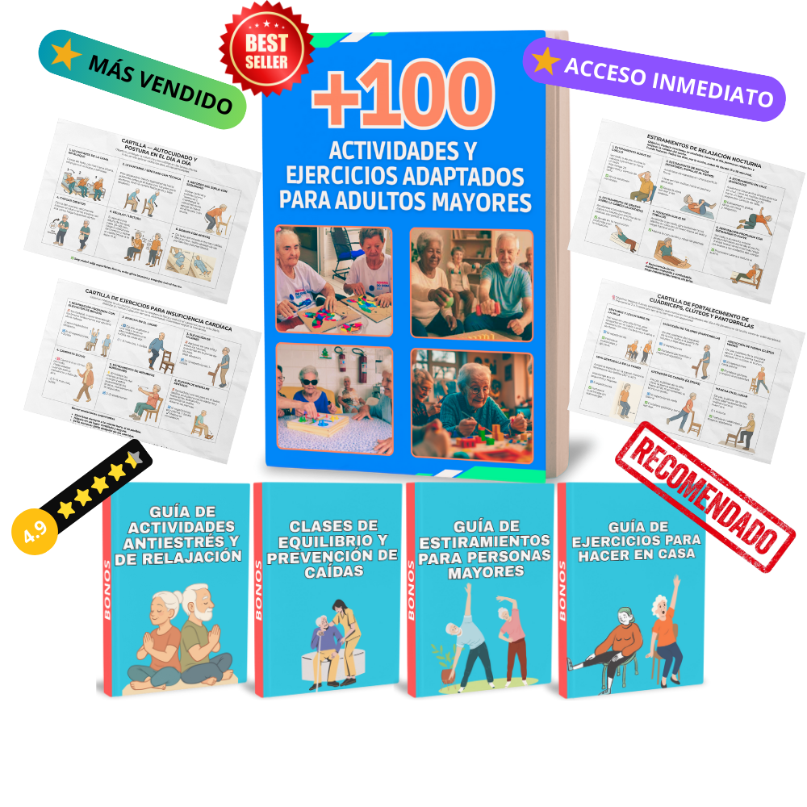
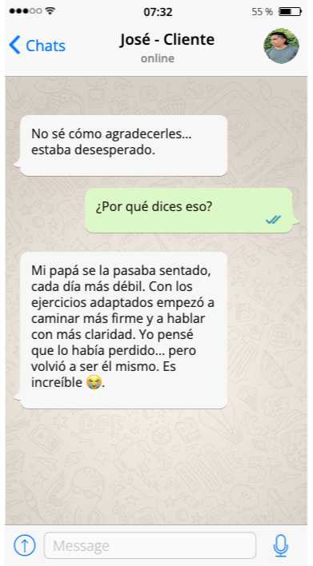
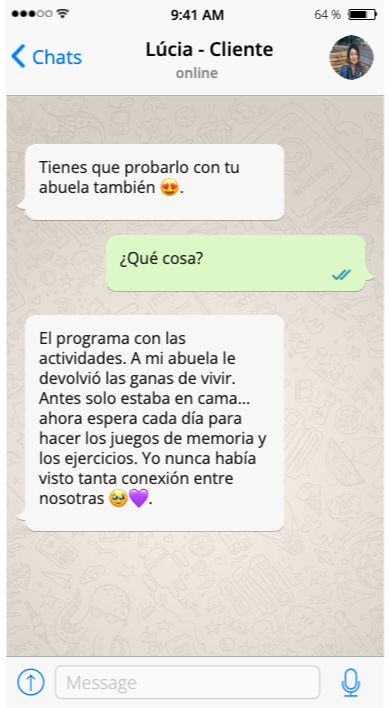
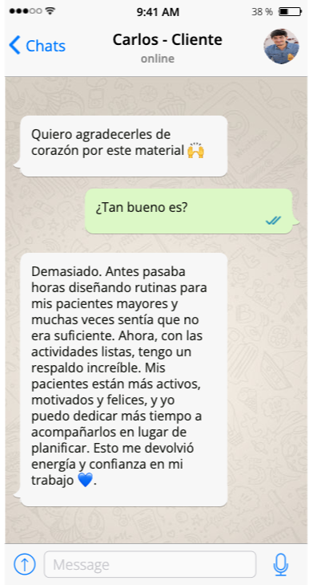
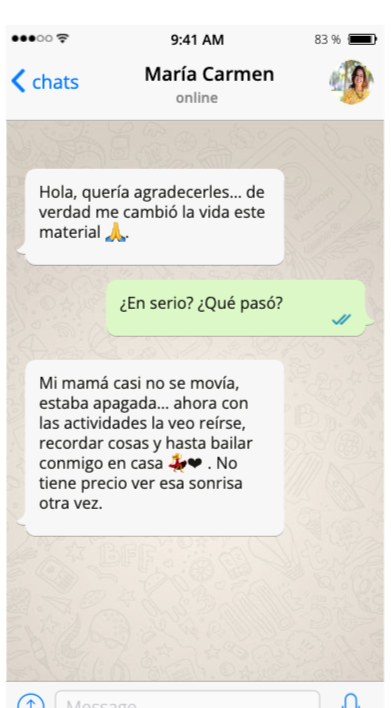

¡Hoy! Sistema completo con 90% OFF · Termina en 23:59:59
El día que mi madre dejó de reconocerme, descubrí que 15 minutos al día podían traerla de vuelta — al menos por un rato.
Un sistema con +100 actividades adaptadas por estadio (leve, moderado, avanzado) para acompañar a tu padre o madre con Alzheimer, demencia o deterioro cognitivo. Sin formación médica. Sin culpa.
Descarga inmediata en PDF · Imprime solo lo que necesitas · Empieza hoy con tu padre.

Acceso desde $3,99 · sin suscripción · pago único · garantía 30 días
★★★★★
Calificado 4,9 por más de 1.200 hijos cuidadores en LATAM y España
Lo que cambia en tu casa
💜
Momentos de conexión real
Actividades pensadas para que él te mire a los ojos, sonría y vuelva a estar presente — aunque sea por unos minutos.
🧠
Estimulación por estadio
Tres niveles distintos: leve, moderado y avanzado. No es lo mismo lo que necesita papá esta semana que el mes pasado.
😌
Menos crisis, menos agitación
Rutinas de 15 minutos que reducen episodios de ansiedad por la tarde (sundowning) y ayudan a dormir mejor.
🤝
Sin formación médica
Diseñado para ti, hijo o hija que cuida en casa — no para un geriatra. Si sabes leer y tener paciencia, puedes hacerlo.
Para quién es este sistema
Hijos que cuidan en casa
Hijas e hijos que dejaron de salir, redujeron horas en el trabajo, y conviven 24/7 con un padre que cambió.
Hijos que viven lejos
Quieres dejar algo concreto cuando vas de visita — o que la cuidadora aplique sin tener que pagar un terapeuta cada semana.
Hermanos que se turnan
Familias que se reparten los días. Una sola guía, mismo método, sin desorden ni conflictos sobre "cómo lo hacíamos antes".
Cuidadores contratados
Para profesionales de acompañamiento que necesitan un material serio y respetuoso para trabajar con adultos con demencia.
Cómo funciona — en 3 pasos simples
Diseñado para hijos sin formación médica. Empezás esta misma tarde, sin instalar nada.
1
Identificá el estadio de tu padre
Test rápido de 2 minutos. Te decimos si está en estadio leve, moderado o avanzado — para que cada actividad esté calibrada al nivel real de hoy, no al de hace un año.
⏱ 2 minutos
2
Imprimí las actividades del día
Cada día tiene 3 bloques: mañana, tarde y antes de dormir. Imprimís sólo lo que vas a usar hoy. Material listo, sin pensar, sin improvisar.
🖨 sin instalar nada
3
15 minutos cada bloque
Cada actividad viene con guión exacto: qué decir, qué materiales usar (todos de casa), qué hacer si se frustra. Sin formación médica.
💜 con guion exacto
Hijos cuidadores que ya cambiaron sus tardes




Elige tu acceso
⏰ Descuento del 90% válido SOLO HOY · termina a las 23:59h del 09/06/2026 · cierra en 23:59:59
Guía Esencial
De $ 39
$ 3,99
90% de DESCUENTO
✓ +100 actividades adaptadas por estadio (leve, moderado, avanzado)
Pruébalo durante 30 días con tu padre. Si no te ayuda a tener un momento de conexión, te devolvemos el 100%. Sin preguntas.
Lo que cuentan otras hijas e hijos
Fragmentos reales de mensajes que nos llegan. Cada historia es distinta — los resultados también.
"Mi mamá tiene Alzheimer moderado. Llevábamos meses sin que me mirara con esa chispa de antes. La tercera tarde con la actividad de las fotos antiguas, me apretó la mano. Lloré. Vale cada peso."
Lucía H., 52 años — Ciudad de México
⭐⭐⭐⭐⭐
"Soy ingeniera, no sabía nada de demencia. Lo que más me ayudó fue la guía de 'cómo hablar cuando ya no te reconoce'. Dejé de corregirla cuando me llamaba por el nombre de mi tía. Ahora simplemente le sigo la conversación. Hay paz en casa."
Beatriz F., 48 años — Madrid
⭐⭐⭐⭐⭐
"Vivo en Buenos Aires, mi papá está en Mendoza con mi hermana. Le imprimí el plan semanal y se lo llevé en mi visita. Ahora ella tiene un guion y yo no me siento tan inútil cuando estoy lejos. Es lo mejor que le pude regalar."
Si ya gastaste plata en cosas que prometieron lo que no podían cumplir — entendemos. Por eso queremos ser claros sobre lo que NO es este sistema.
❌
NO es una cura
El Alzheimer y la demencia no se curan. Cualquiera que te diga lo contrario te está mintiendo. Lo nuestro es darte momentos buenos en el día, no revertir la enfermedad.
❌
NO reemplaza al geriatra
Tu papá necesita seguir con su neurólogo, su medicación y sus consultas. Este sistema es un complemento para los 23 horas que vos pasás con él entre consulta y consulta.
❌
NO es terapia profesional
No vas a hacer rehabilitación neurológica con esto. Vas a tener herramientas para conectar, estimular y reducir crisis — desde tu rol de hija o hijo cuidador.
❌
NO funciona si no lo hacés
Te lo decimos directo: si lo descargás y no lo aplicás, no va a pasar nada. El sistema es simple, pero necesita 15 minutos al día de vos.
✅ Lo que SÍ es:
Un plan concreto, paso a paso, escrito por gente que cuidó a sus propios padres con demencia — para que vos dejes de improvisar y empieces a tener momentos buenos con tu papá o mamá esta misma semana.
Preguntas frecuentes
Sí. El nivel "avanzado" tiene actividades que no exigen palabras: estimulación táctil con texturas, música familiar de su juventud, masaje guiado de manos, aromas que él reconoce. El objetivo no es que él hable — es que durante esos minutos haya un encuentro entre los dos.
El sistema está escrito para hijos, no para terapeutas. Cada actividad tiene 3 cosas: qué materiales necesitas (todos de casa), qué decir paso a paso, y qué hacer si tu padre se frustra o se distrae. Si sabes leer y tener paciencia, puedes empezar hoy.
La mayoría de las familias reportan un primer "momento de conexión" en los primeros 3 a 7 días — una sonrisa, un apretón de mano, una palabra. Lo que toma más tiempo (3-4 semanas) es reducir crisis y agitación. No prometemos curar la demencia — eso no se puede. Prometemos que tendrás más momentos buenos en el día.
Sirve para cualquier forma de declinación cognitiva en adultos mayores donde haya preservada la capacidad de sentir, escuchar música o tocar objetos. El protocolo se adapta por estadio funcional, no por diagnóstico médico — así que funciona transversalmente.
Después de la confirmación del pago, recibes un correo con el enlace de descarga inmediata. Puedes empezar a imprimir y aplicar la primera actividad en menos de 5 minutos.
Tienes 30 días para probarlo con tu padre o madre. Si no te ayuda a tener al menos un momento de conexión, escribes a soporte y te devolvemos el 100%. Sin preguntas, sin trámites.
Sistema Completo · $9,9990% OFF · garantía 30 días